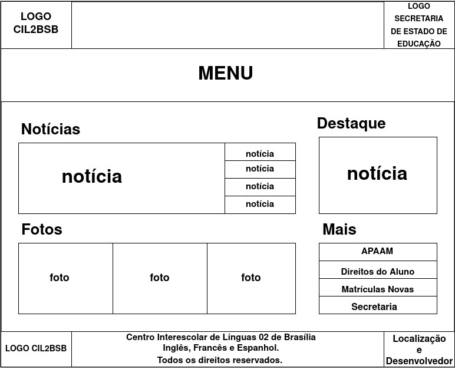

Guia de Estilo
Histórico de Versões
| Data | Versão | Descrição | Autores | Revisor |
|---|---|---|---|---|
| 23/03/2021 | 0.1 | Criação do Documento | Eduarda Servidio | Pedro Haick |
| 23/03/2021 | 0.2 | Adição do tópico e subtópicos referentes a Introdução | Eduarda Servidio | Giovana Dionisio |
| 23/03/2021 | 0.3 | Adição do tópico e subtópico referentes a Resultados de Análise | Eduarda Servidio | Giovana Dionisio |
| 24/03/2021 | 0.4 | Adição dos tópicos e subtópicos referentes a Elementos de Interface e Estilos de Interação | Hérya Rodrigues | Eduarda Servidio |
| 24/03/2021 | 0.5 | Adição dos tópicos 5 e 6 | Luis Marques | Eduarda Servidio |
1. Introdução
Guia de Estilo trata-se de um registro das principais decisões de design tomadas, de forma que elas não se percam, isto é, sejam efetivamente incorporadas no produto final.
A imagem abaixo mostra a fase do Ciclo de Mayhew que estamos desenvolvendo:
Figura1: Análise de Requisitos do Ciclo de Mayhew. Modificado por: Eduarda Servidio. Fonte: BARBOSA, Simone et al. "Interação Humano-Computador". Capítulo 6, p 88.
1.1 Objetivo do Guia de Estilo
Guias de Estilo servem de ferramenta de comunicação entre os membros da equipe de design e também com a equipe de desenvolvimento. É importante que as decisões de design possam ser facilmente consultadas e reutilizadas nas discussões sobre extensões ou versões futuras do produto.
A partir disso, criaremos um Guia de Estilo com a função de registrar as decisões de design relacionadas a implementação do site CIL2-BSB.
1.2 Organização e conteúdo do Guia de Estilo
O Guia de Estilo será baseado na estrutura proposta por Marcus (1991) e Mayhew (1999).
Segue a estrutura detalhada:
1) Introdução:
* Objetivo do guia de estilo;
* Organização e conteúdo do guia de estilo;
* Público-alvo do guia de estilos
* Como utilizar o guia
* Como manter o guia
2) Resultados de análise
* Descrição do ambiente de trabalho do usuário
3) Elementos de interface
* Disposição espacial e grid
* Janelas
* Tipografia
* Símbolos não tipográficos
* Cores
* Animações
4) Elementos de interação
* Estilos de interação
* Seleção de um estilo
* Aceleradores
5) Elementos de ação
* Preenchimento de campos
* Seleção
* Ativação
6) Vocabulário e padrões
* Terminologia
* Tipos de tela
* Sequências de diálogos
1.3 Público-alvo do Guia de Estilos
O público-alvo são os desenvolvedores e programadores do site, assim como, a equipe que irá lidar com o design do site CIL2-BSB.
1.4 Como utilizar o Guia
O Guia de Estilo deve ser utilizado como parte de um processo reflexivo de design, e não como um conjunto de soluções prontas ou fórmulas geradoras de soluções. O Guia deve auxiliar nas correções e melhorias do design do site do CIL2-BSB.
1.5 Como manter o Guia
O Guia de Estilo deve ser feito na fase de "Análise de Requisitos" e atualizado a cada nível na fase de "Design, Avaliação, Desenvolvimento" como indicado na imagem abaixo do Ciclo de Mayhew. O Guia deve ser mantido sempre atualizado após cada alteração no desenvolvimento do projeto.
Figura2: Ciclo de Mayhew. Modificado por: Eduarda Servidio. Fonte: BARBOSA, Simone et al. "Interação Humano-Computador". Capítulo 6, p 88.
2. Resultados de Análise
2.1 Descrição do ambiente de trabalho do usuário
O site do CIL2-BSB é um ambiente na web voltado a apresentar notícias e orientar as pessoas, interessadas em aprender uma nova língua em Brasília, no seu processo de matrícula. Na tela Home do site o usuário encontra 6 Abas superiores com informações diversas sobre tudo que diz respeito ao CIL2-BSB e seus alunos, bem como um link que redireciona ao Facebook do Centro Interescolar. Ao longo da página Home, há uma seção de Notícias, uma de Fotos e uma de Destaque, bem como um pequeno atalho das principais funções do site no canto inferior direito da tela, seção Mais.
Segue imagem do site do CIL2-BSB, bem como detalhamento da Aba Superior da página Home:
Figura3: Site do Cil2-BSB. Disponível em: http://www.cil2bsb.com.br/
Figura4: Aba Superior do site do Cil2-BSB. Disponível em: http://www.cil2bsb.com.br/
3. Elementos de interface
3.1 Disposição espacial e grid
A disposição espacial atual do site é simples, mas a forma como o grid está disposto faz com que alguns elementos se confundam ou se sobreponham. Na figura 3 do subtópico acima - "Descrição do ambiente de trabalho do usuário" - pode-se observar que títulos de diferentes notícias estão sobrepostos e que algumas notícias chegam a se repetir até três vezes na página inicial, mas em diferentes partes do grid.
Segue abaixo o grid atual para a página inicial e diferentes janelas:

Figura 5: Grid da página inicial
Figura 6: Grid da janela de notícias

Figura 7: Grid das demais janelas
3.2 Janelas
Além da página inicial, há 16 janelas funcionais: CIL2, Equipe Gestora, Conselho Escolar, Secretaria do CIL 02 de Brasília, APAAM, Avaliação, Regimento Interno – CIL 2, Deveres do Aluno, Matrículas Novas, Renovação de Matrícula, Trancamento de Matrícula, Notícias, Banco do Livro, Cine Cil, Monitoria e Reforço Escolar e Fale Conosco. A funcionalidade comum a todas é a visualização de informações e notícias.
No entanto, o menu principal - localizado na parte superior do site - redireciona o usuário a algumas janelas vazias, como a janela de Professores (Figura 8) e a do DELE (Figura 9).
Figura 8: Janela "Professores" sem informações. Disponível em: http://www.cil2bsb.com.br/quem-somos/professores/
Figura 9: Janela "DELE" sem informações. Disponível em: http://www.cil2bsb.com.br/dele/
3.3 Tipografia
As principais fontes utilizadas são Arial, Helvetica e Tahoma.

Figura 10: Exemplos de utilização da fonte Arial
Figura 11: Exemplos de utilização da fonte Helvetica

Figura 12: Exemplos de utilização da fonte Tahoma
3.4 Símbolos não tipográficos
O site apresenta os seguintes símbolos não tipográficos:
Figura 13: Símbolos não tipográficos encontrados no site do CIL2BSB
3.5 Cores
3.5.1 Cores do logo
Figura 14: Cores do logo do CIL2BSB
3.5.2 Cores principais
Figura 15: Principais cores encontradas no site do CIL2BSB
3.5.1 Cores secundárias
Figura 16: Cores secundárias encontradas no site do CIL2BSB
3.6 Animações
O site do CIL2BSB apresenta uma animação, na Página Home na seção das Notícias, das principais e atuais notícias presentes no site.
4.Elementos de interação
4.1 Estilos de interação
No site do CIL2BSB é encontrado o WIMP(Windows, Icons, Menus, and Pointers), que consiste na utilização de janelas, ícones, menus e ações com o mouse. Dentre estes, o menu é o mais utilizado, de forma a possibilitar a navegação do usuário.
4.2 Seleção de um Estilo
O estilo predominante no site é o de menus. Diante disso, o usuário procura o que deseja no menu e tenta realizar a funcionalidade.
4.3 Aceleradores (teclas de atalho)
Durante a utilização do site, não foram encontrados aceleradores de nenhum tipo.
5. Elementos de ação
5.1 Preenchimento de campos
O sistema não possui campos a serem preenchidos.
5.2 Seleção
O usuário pode selecionar qualquer texto ou elemento no site.
5.3 Ativação
O sistema não possui ações que necessitem de ativação por parte do usuário.
6. Vocabulário e padrões
6.1 Terminologia
O site não usa terminologias específicas.
6.2 Tipos de tela
O site em todas as telas fazem uso de uma barra superior (top bar) e uma barra inferior (footer).
Figura 17: top bar site do CIL2BSB. Disponível em: http://www.cil2bsb.com.br
Figura 18: footer site do CIL2BSB. Disponível em: http://www.cil2bsb.com.br
6.3 Sequências de diálogos
O site não usa sequências de diálogos, sendo as informações transmitidas sempre unilateralmente(do site para o usuário).
Bibliografia
Barbosa, S. D. J.; Silva, B. S. da; Silveira, M. S.; Gasparini, I.; Darin, T.; Barbosa, G. D. J. (2021) Interação Humano-Computador e Experiência do usuário. Autopublicação.
Os diagramas do tópicos Elementos de Interface e Estilos de Interação são de elaboração própria e foram criadas utilizando draw.io e Adobe Color.